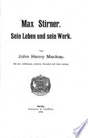
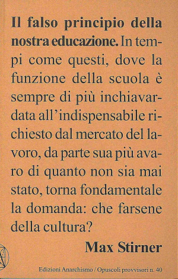
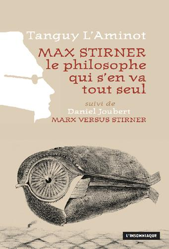

31:57 · 7 OPERE
Un commento su Max Stirner.
Il filo del discorso
Dalla visita alla tomba berlinese di Max Stirner, Dr Divago propone una rilettura del pensatore che ne riporti l’unicità individuale al centro del confronto con l’Ottocento. La vicinanza al memoriale del Muro diventa una cornice simbolica per discutere il rapporto con Marx ed Engels, il gruppo dei Liberi e la riscoperta biografica dovuta a Mackay. Il relatore contesta le letture che riducono Stirner a un’etichetta e accosta il suo individuo a quello di Kierkegaard; segnala inoltre affinità con Nietzsche e Heidegger, senza stabilire documentalmente una derivazione diretta. Alcuni passaggi dell’Unico introducono la libertà dello spirito, Peter Schlemihl e la progressiva trasformazione del rapporto fra mondo e verità. La domanda di Pilato offre lo spunto per una lettura scettica che il relatore considera ancora feconda. Il richiamo al saggio sull’educazione e a un volume di Tanguy L’Aminot completa l’invito a tornare ai testi: la cultura viene intesa come confronto con ragioni diverse dalle proprie, oltre le appartenenze ideologiche.
I libri nel discorso

Max Stirner. Sein Leben und sein Werk
Frontespizio della biografia del 1898: Frontespizio dell’edizione Schuster & Loeffler, Berlino, 1898, digitalizzazione bibliotecaria.
Frontespizio autentico dell’edizione 1898 di Schuster & Loeffler, leggibile nel record Google Books della Bayerische Staatsbibliothek. Non è una copertina esterna. Le edizioni ampliate del 1910 e 1914 sono distinte e non attribuite a questa immagine.
John Henry Mackay e il titolo Max Stirner, sein Leben und sein Werk esplicitamente richiamati.
Passaggio 4:04 ↗ · Fonti e libro ↗
L’unico e la sua proprietà
Copertina: Adelphi, Biblioteca 91, 1979; traduzione di Leonardo Amoroso
Copertina dell’edizione Biblioteca Adelphi 91, con un saggio di Roberto Calasso. Edizione scelta come riferimento iconografico; nessuna edizione è confermata nel video.
Der Einzige und sein Eigentum, poi L’unico e la sua proprietà, nominato e discusso estesamente.
Passaggio 4:58 ↗ · Fonti e libro ↗
Sull’avvenire delle nostre scuole
Copertina: Adelphi, 1975
Richiamo al testo di Nietzsche sul futuro delle scuole come termine di confronto cronologico.
Passaggio 14:53 ↗ · Fonti e libro ↗
Il falso principio della nostra educazione
Copertina: Edizioni Anarchismo, Opuscoli provvisori 40, seconda edizione novembre 2013; introduzione di Jean Barrué.
Immagine autentica dell’opera, controllata visivamente; l’edizione di riferimento non è attribuita al filmato.
Titolo tedesco riconoscibile e traduzione del saggio sul falso principio dell’educazione.
Passaggio 15:09 ↗ · Fonti e libro ↗
La strana storia di Peter Schlemihl
Identificazione probabile
Copertina: Edisco · I Liocorni · traduzione e cura di Daniela Meinardi
Immagine autentica dell’opera, controllata visivamente; l’edizione di riferimento non è attribuita al filmato.
Peter Schlemihl che perde l’ombra: riferimento riconoscibile al racconto di Chamisso, autore non pronunciato qui.
Passaggio 19:30 ↗ · Fonti e libro ↗
Bibbia
Identificazione probabile
Copertina: San Paolo, 2014 · Nuova Versione dai Testi Antichi · edizione di riferimento
Pilato domanda a Gesù quid est veritas: riferimento a Giovanni 18,38.
Passaggio 24:46 ↗ · Fonti e libro ↗
Max Stirner, le philosophe qui s’en va tout seul
Copertina: L’Insomniaque, 2012; seguito da Marx versus Stirner di Daniel Joubert.
Immagine autentica dell’opera, controllata visivamente; l’edizione di riferimento non è attribuita al filmato.
Tanguy L’Aminot e il libro Max Stirner, le philosophe qui s’en va tout seul, titolo riconoscibile nonostante la trascrizione automatica.
Passaggio 26:57 ↗ · Fonti e libro ↗